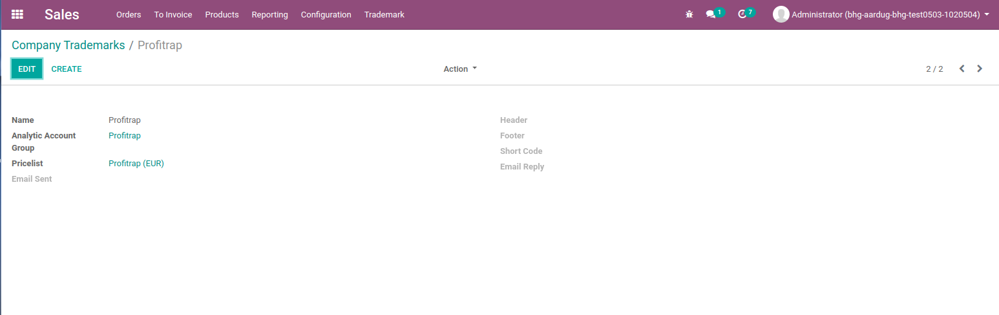

<section class="oe_container">
    <div class="oe_row">
        <div class="oe_span12">
            <h2 class="oe_slogan" style="color: midnightblue">Custom Header Footer </h2>
            <h4 class="oe_slogan" style="color: blueviolet">Overview</h4>
            <p>This module is provide configuration for report header/footer, pricelist, send mail, short code, email reply, analytic account group.</p>
        </div>
        <div class="oe_span12">
            <h3><i class="fa fa-hand-o-right"></i>&nbsp; Features</h3>
            <ul style="list-style: square;">
                <li>Use dynamic header and footer on all reports of sale and invoice based on selected tradmark. </li>
                <li>Add analytic accounts on sale order.</li>
                <li>Generate sale order number using short code of tradmark</li>
                <li>Add <b>reply</b> to email when mail send to customer from sale order and invoice.</li>
                <li>Add <b>from</b> email when mail send to customer from sale order and invoice.</li>
                <li>Add price list on online PF and also pass it to sale order if sale order is created from online PF</li>
            </ul>
        </div>
        <div class="oe_span12">
            <h4 class="oe_slogan" style="color: blueviolet">Create tradmark configuration</h4>
            <div class="oe_demo oe_picture oe_screenshot" style="max-height: 500px; max-width: 500px">
                
            </div>
        </div>
    </div>
</section>
